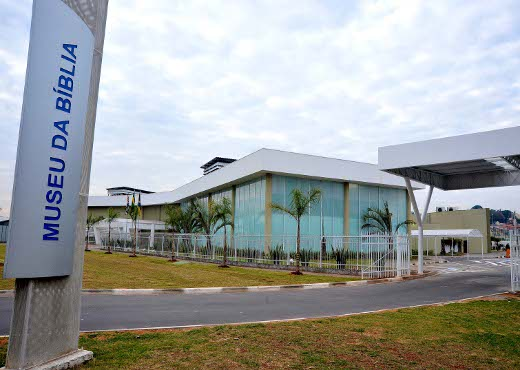
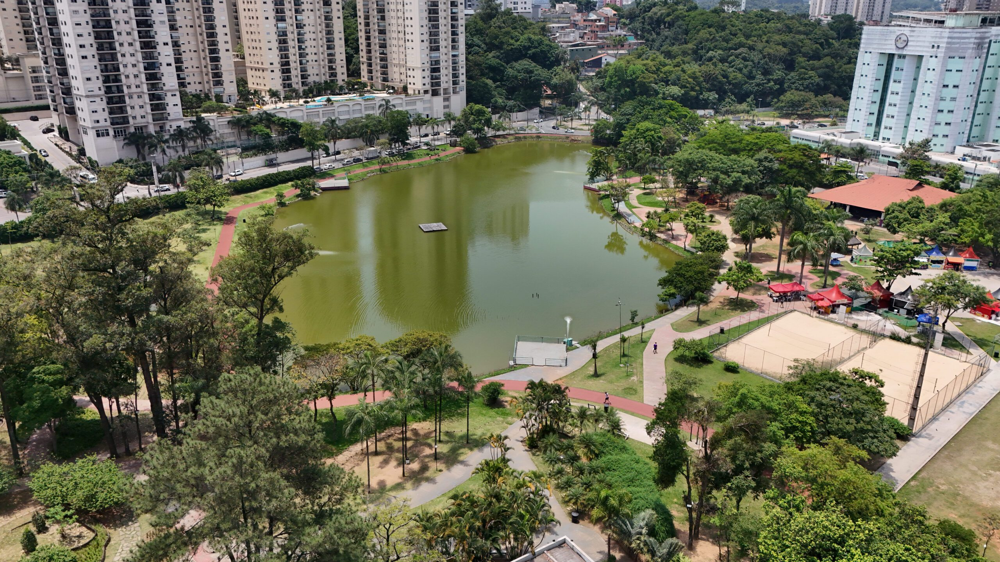
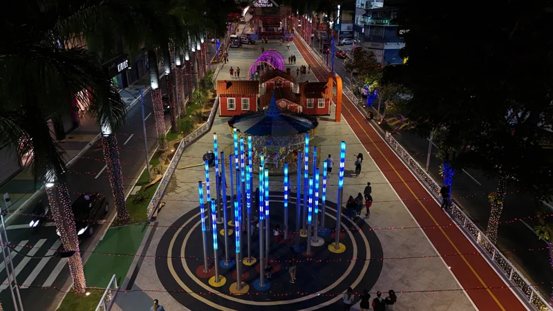

Barueri, localizada na Região Metropolitana de São Paulo, é reconhecida como um dos maiores polos empresariais e tecnológicos do país, abrigando o famoso bairro Alphaville. A cidade se destaca pela infraestrutura moderna, geração de empregos e investimentos em educação e saúde, além de oferecer qualidade de vida e opções de lazer que atraem moradores e visitantes.
Museu da Bíblia (MuBi) - Espaço cultural que preserva a história e a religiosidade da cidade.
📍 Av. Sebastião Davino dos Reis, 672 - Vila Porto, Barueri - SP.
Parque Municipal Dom José – Área verde para lazer, caminhadas, playground e apresentações culturais.
📍 Endereço: R. Ângela Mirella, 500 – Jardim Barueri, Barueri – SP.
Boulevard Central de Barueri – Região com bares, restaurantes e vida noturna agitada.
📍 Endereço: Av. Vinte e Seis de Março - Centro, Barueri - SP.
